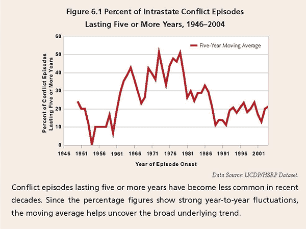

What’s the World Coming To?
If you read the newspapers, you will get depressed. Iran, Syria, Egypt—everyone knows about them. The Chinese, behind their polite smiles, are always up to mischief—no one knows what they’re thinking. And the Russians are always flexing their muscles, trying to regain the glory of the Czars. Everyone knows what they’re thinking. So the world seems to be a mess, in deep trouble… But it’s not true.
There’s a story about a religious Jew who lived in a Jewish community where everyone read the Jewish newspapers (of course). Everyone, that is, except for this man—he would read only the anti-Semitic newspaper. This went on for a long time until his friends became irritated with him and challenged him on it. They said to him, “Look, you are a religious Jew. How could it be that while we are all reading the Jewish newspapers, you read only the anti-Semitic newspaper?”
“Let me explain,” he answered. “When I read the Jewish newspapers I see all the problems facing the Jewish community: the security situation in Israel, problems within the Jewish communities, problems in family relationships etc., and I get very depressed. But when I read the anti-Semitic newspaper, it says that the Jews have all the money, the Jews control the banks and all the governments etc. and it makes me very happy…”
Indeed, if you read the newspapers, you will get depressed. Iran, Syria, Egypt—everyone knows about them. The Chinese, behind their polite smiles, are always up to mischief—no one knows what they’re thinking. And the Russians are always flexing their muscles, trying to regain the glory of the Czars. Everyone knows what they’re thinking. So the world seems to be a mess, in deep trouble…
But it’s not true.
How could it be true? The Rebbe Melech HaMoshiach said that we are in the Era of Moshiach and exactly 21 years ago, at this time of year—Parshas Mishpatim—he said that the Swords Into Ploughshares prophecy of Isaiah had begun to be fulfilled. So the world must be in good shape in spite of what the newspapers are saying. Now we have a dilemma. What are we to do?
Well, first of all, stop reading the newspapers and start reading the Human Security Report. What is that, you say? In 2004 a group of researchers from five governments and international organization got together to gather the data and do the research to find out exactly what shape the world is in—how secure it is for humans. This became known as the Human Security Project. By their own admission they thought that the results of their investigation would show a world in trouble. (They also read the newspapers.) But after three years of research, they discovered, to their surprise, that the world is in fact in quite good shape. For example, the number of wars in the world was steadily decreasing and the number of people dying in wars was steadily decreasing. Decreasing since when? Since 1992 when the Rebbe MHM said that Swords Into Ploughshares (SIP) was now in effect! In fact, go to their website and you will see the following declaration on top of the page: “Conflict numbers have decreased significantly since 1992.”
We have been writing our own annual SIP report in this magazine since 1995 and in recent years, we reported on the results of the annual Human Security Report (HSR). In my book Scientific Thought in Messianic Times, an entire chapter (about 150 pages) is devoted to Swords Into Ploughshares and a section of that chapter reviews recent Human Security Reports. The 2012 HSR has just been issued and once again the researchers express surprise at their own results.

SWORDS INTO PLOUGHSHARES—THE EVENT AND THE SICHA
Let’s review, for a moment, the events of the Swords Into Ploughshares declaration in 1992.
On January 31, 1992, the heads of state of the major world powers met at the United Nations in New York City. This was the first Security Council Summit in history, i.e., the first meeting held by the Security Council at the level of heads of state. At this meeting they issued a joint statement announcing
“a new era in international relations—an era in which warfare would be eliminated, weapons would be
reduced or destroyed, and peace and unity, cooperation and mutual aid would prevail among the nations of the world—for the good of all mankind.”
The next day, at the Shabbos farbrengen of Parshas Mishpatim in “770,” the Rebbe Melech HaMoshiach announced that the statement issued by the heads of state at the United Nations was the beginning of the fulfillment of the prophecy of Isaiah, thousands of years ago, that in the Era of Moshiach the nations of the world will “beat their swords into ploughshares.” He explained that this declaration of intent by the world leaders was the direct result of the influence of Melech HaMoshiach himself on the nations of the world. He continued by describing the details of this influence over several decades, especially the promotion of the ideals of goodness, fairness and justice through the observance of the Seven Noachide Commandments, throughout the world. This brought about a refinement of the nations of the world, the climax of which was the collapse of the atheistic Communist regime in Russia and its replacement with a government committed to justice, fairness and peace based on the belief in G-d.
It is the “elimination of warfare” (bittul matzav shel milchamos) that we are focusing on here and this is what the Human Security Report documents. In October 2005, the Human Security Center issued the Human Security Report 2005: War and Peace in the 21st Century.” Funded by five governments and three years in the making, the Report tracks and analyzes trends in political violence around the world. “Its findings are sharply at odds with conventional wisdom. It shows that most forms of political violence have declined significantly since the end of the Cold War—and finds that the best explanation for this decline is the huge upsurge of conflict prevention, resolution and peace-building activities that were spearheaded by the United Nations in the aftermath of the Cold War,” according to the Human Security Center’s own description. Prior to the 20th century, the HSR explains, warfare was a normal part of human existence. For governments, war was simply an instrument of statecraft. Today the forcible acquisition of territory is universally perceived as a blatant transgression of international law, and resort to force against another country is only permissible in self defence, or with the sanction of the UN Security Council.
Similarly, the Secretary General of the U.N., in his report on the meeting of the heads of state titled “An Agenda for Peace,” writes that “It is possible to discern an increasingly common moral perception that spans the world’s nations and peoples.”
And it’s not just in the area of war and peace that the nations of the world have had a fundamental change of attitude, but also, as the Rebbe MHM said in the sicha “cooperation and mutual aid would prevail among the nations of the world—for the good of all mankind.” For example at the G20 economic summit convened in 2009 to discuss the world economic crisis, the Prime Minister of England said:
“A few years ago, meetings such as this could not have happened with so many different countries from diverse continents involved. Far less could there have been an agreement amongst them. But today the largest countries of the world have agreed to a global plan for recovery and reform. For the first time we have a common approach. This is collective action—people working together at their best. I think a new world order is emerging, and with it, the foundations of a new and progressive era of international cooperation.”
This entire state of affairs is unfolding exactly as the Rebbe Melech HaMoshiach described it in the sicha. This is Swords Into Ploughshares. This is the Era of Moshiach.
SWORDS INTO PLOUGHSHARES 5773
In the Human Security Report 2012, they begin Chapter 6 on “Armed Conflict” by saying, “It is now widely accepted that the number of armed conflicts has declined substantially over the last two decades.” They go on to quote some opinions that claim that the wars are lasting longer, however, and even when they stop they are likely to start again so the situation is depressing.
But the HSR completely rejects this assessment and says that “a closer examination of the data reveals a considerably more encouraging picture than other authors suggest.” (The other authors must have been reading the wrong newspapers.) They continue to explain:
“Most of today’s conflict episodes are relatively short; long-lasting conflicts are increasingly the exception rather than the rule. Persistent conflicts are often very small in scale, and the higher rates of recurrence of conflict result in large part because conflicts have become more difficult to win—but not necessarily more difficult to resolve. An increasing proportion of conflicts is terminated by negotiated settlements, the majority of which prevent the recurrence of violence. We further find that even when peace deals collapse, the death toll due to subsequent fighting is dramatically reduced.”
They go on to give specific data and explain how they analyze the data. Civil war episodes since the end of World War II have lasted on average approximately four years and three months. So they use an average of 5 years as the cut off line. If a civil war lasts less than 5 years, it’s considered short; longer than 5 years it’s considered long. The results are shown in the graph (figure 6.1)
The graph shows that since about 1992 “the share of longer than average episodes of conflict has remained lower at approximately 20 percent. In other words, roughly 80 percent of the more recent conflict outbreaks were followed by less than five years of continuous fighting. The fact that this figure is significantly higher than during the preceding decades counters claims that there has been a general increase in conflict duration. Recent conflict episodes appear to be less persistent, not more, than those that started earlier.”
CONNECTION WITH THE SWORDS INTO PLOUGHSHARES DECLARATION
The report also analyzes how the decrease in civil wars is connected to the changes of attitude of the major nations of the world as expressed in the 1992 Swords Into Ploughshares Declaration:
“Since the end of the Cold War, the intensity of armed conflicts has declined dramatically. In many cases, long-standing civil wars came to an end while new conflicts tended to end after only a few years of fighting. As a result, the number of conflicts has declined globally…[and] the duration of recent conflicts and conflict episodes has also seen a significant drop.
“For more than four decades following the end of World War II the superpowers and their allies engaged in “proxy” wars by fuelling civil wars in the developing world. This exacerbated death tolls and prolonged the fighting by providing the warring parties with financial, military, ideological, and political support. The end of the Cold War abruptly reduced the external support that had helped sustain both governments and rebel forces. Without it, many long-standing conflicts simply ground to a halt.”
The end of the Cold War also coincided with an upsurge in peacemaking and peace-building missions seeking to bring armed conflicts to an end and to prevent them from starting again. The 2009/2010 Human Security Report explained how this international activism has helped reduce the number of active civil wars around the world since 1992. But an additional benefit of these international efforts has been a reduction in conflict duration. There is strong evidence that the mediation efforts central to post–Cold War peacemaking have shortened the average length of armed conflicts.
Last but not least, it is important to note how much the human costs of conflict are reduced by peace agreements even when they break down. Even peace agreements that break down almost always lead to a dramatic reduction in battle deaths. Death tolls drop by more than 80 percent on average in conflicts that recur after a peace agreement.
A SMALL WORLD
Man is called an Olam Katan, a microcosm. What happens in the world at large happens in us also. (And vice versa—we can change the world by changing ourselves.) I submit that if we look at our own lives we will see the same thing that we are seeing in the world. If we read the newspapers published by the Nefesh Ha’bahamis, they will report that a lot of negative things are going on in our lives—the same old stuff. But if we read the reports published by the Nefesh HaElokis, we will see a careful analysis of the data which will tell us that it’s not that bad, that things are improving and that in fact overall things are quite good.
The Rebbe MHM’s instruction to open our eyes to see the Geula does not necessarily mean that we have to have some deep Kabbalistic perception. It can be simply a matter of reading the right reports—and the right newspapers.
Prof. Shimon Silman. "What’s the World Coming To?." Beis Moshiach, no. 869 (February 13, 2013).